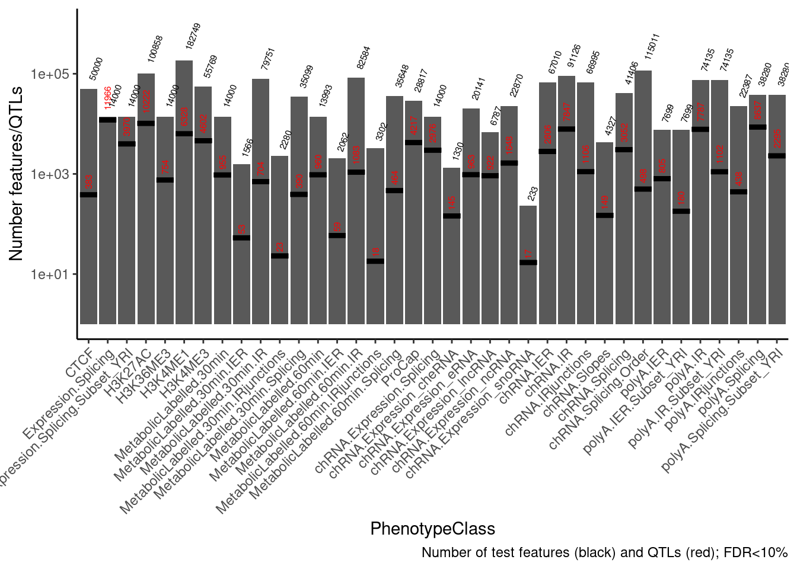
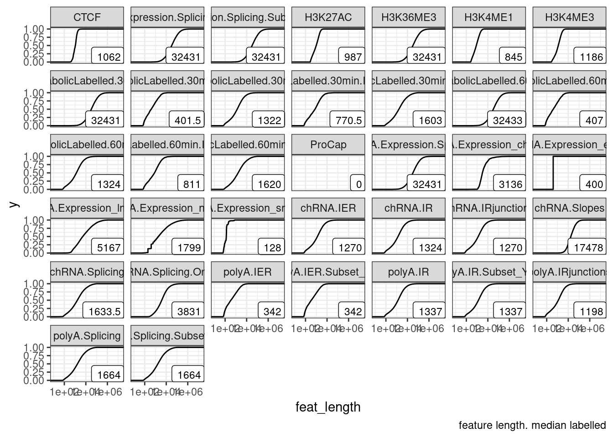
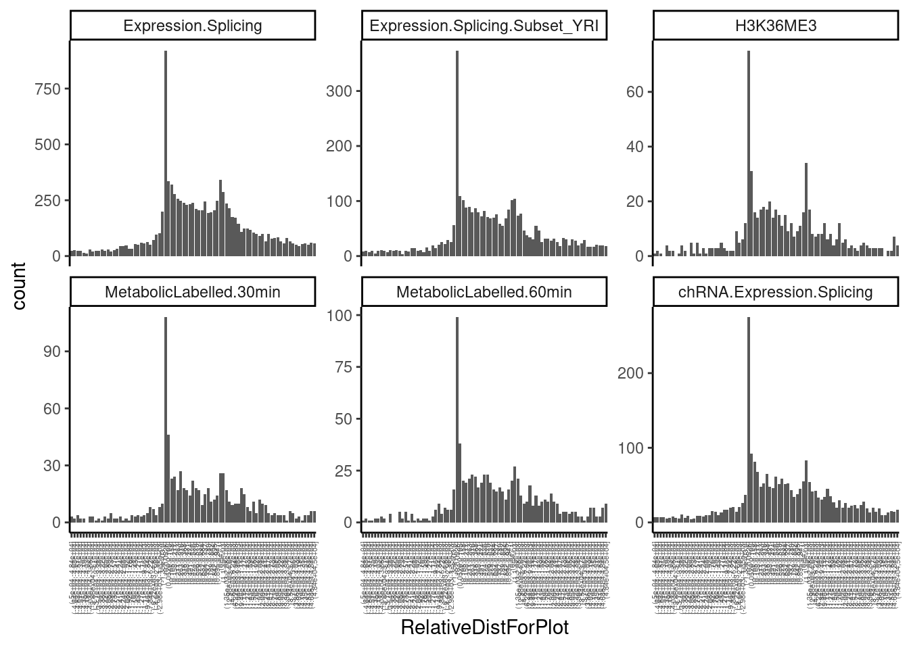
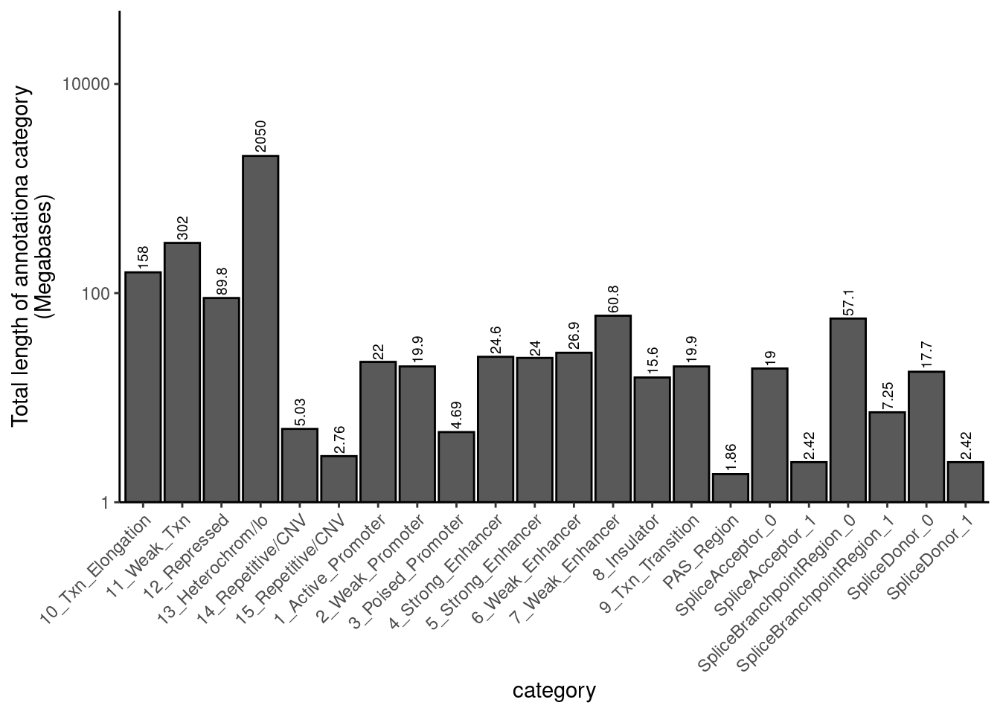
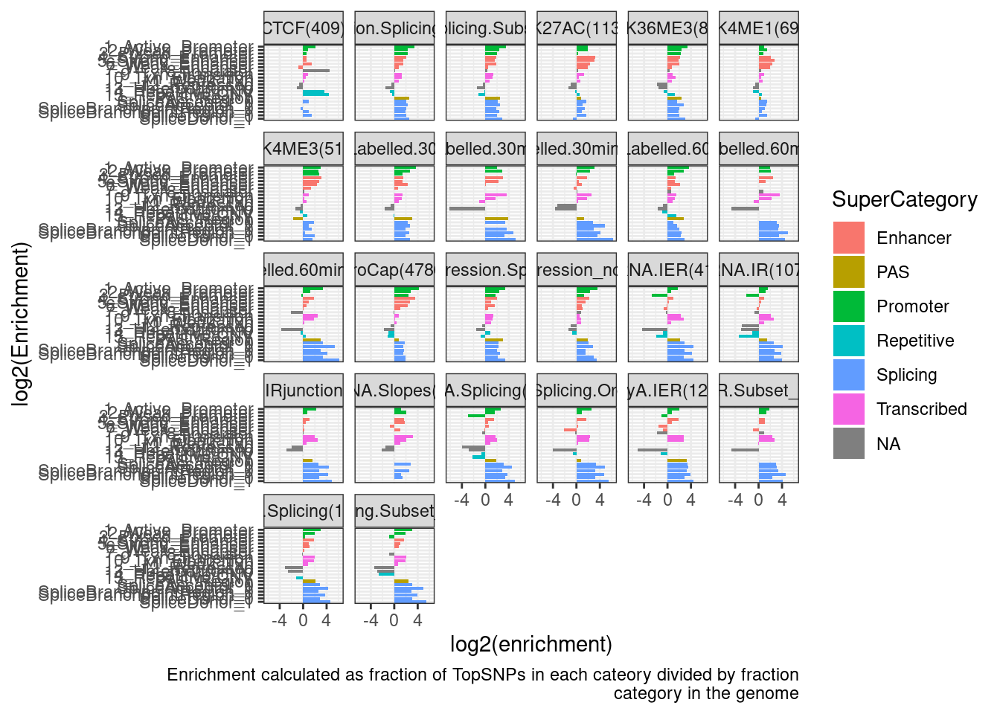
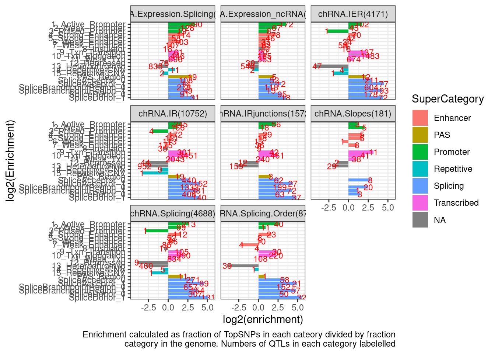
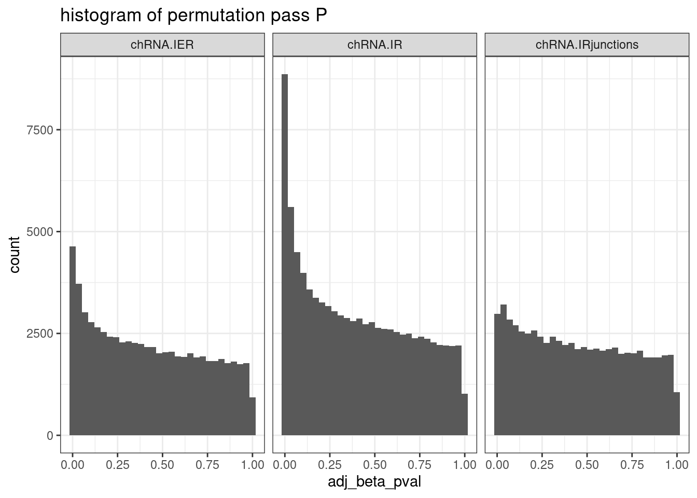
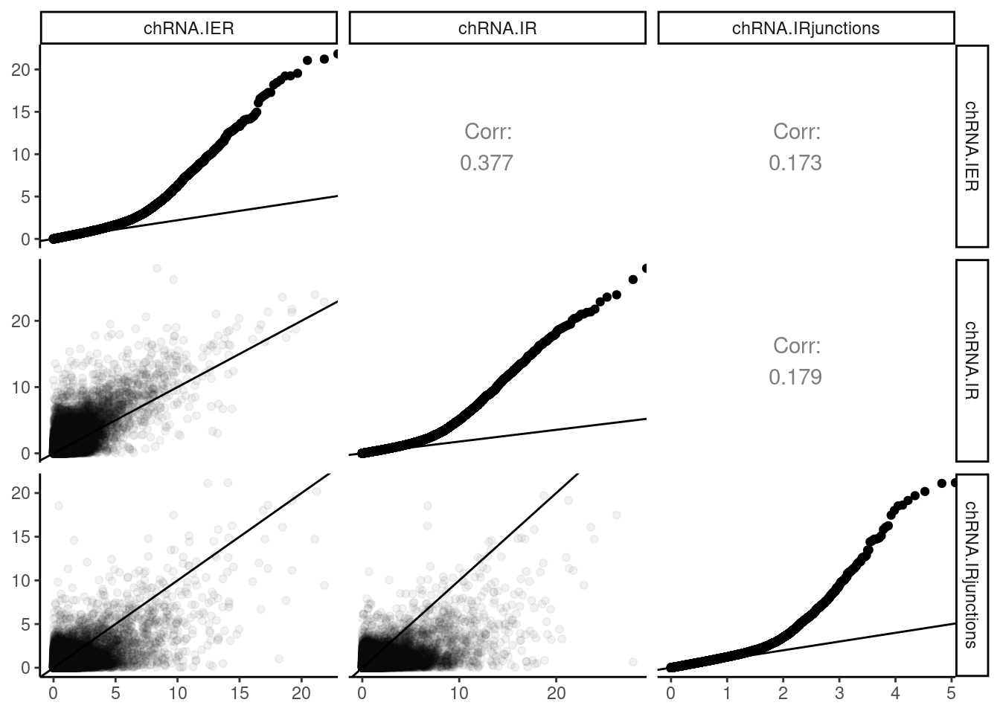
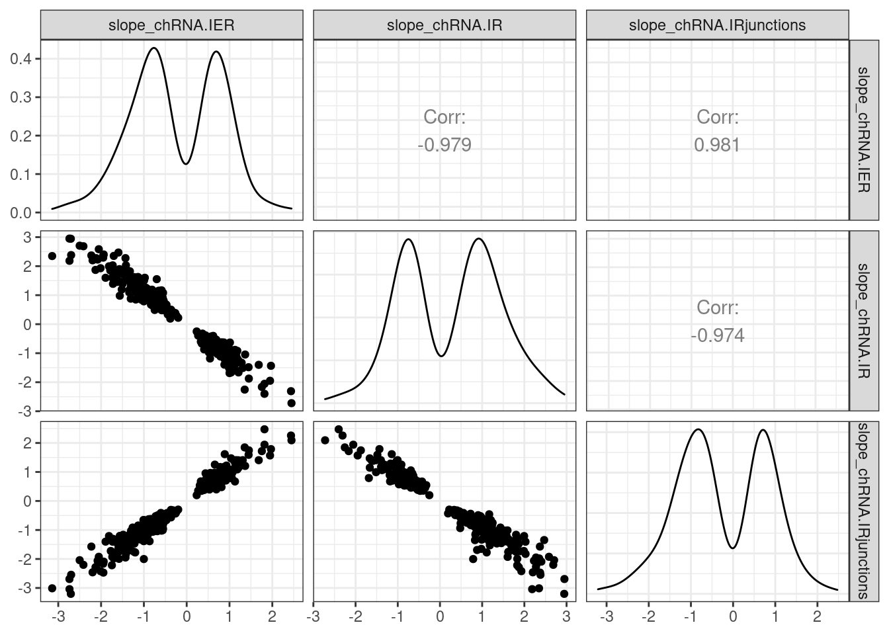

Last updated: 2022-10-05
Checks: 6 1
Knit directory: ChromatinSplicingQTLs/analysis/
This reproducible R Markdown analysis was created with workflowr (version 1.6.2). The Checks tab describes the reproducibility checks that were applied when the results were created. The Past versions tab lists the development history.
The R Markdown is untracked by Git. To know which version of the R Markdown file created these results, you’ll want to first commit it to the Git repo. If you’re still working on the analysis, you can ignore this warning. When you’re finished, you can run wflow_publish to commit the R Markdown file and build the HTML.
Great job! The global environment was empty. Objects defined in the global environment can affect the analysis in your R Markdown file in unknown ways. For reproduciblity it’s best to always run the code in an empty environment.
The command set.seed(20191126) was run prior to running the code in the R Markdown file. Setting a seed ensures that any results that rely on randomness, e.g. subsampling or permutations, are reproducible.
Great job! Recording the operating system, R version, and package versions is critical for reproducibility.
Nice! There were no cached chunks for this analysis, so you can be confident that you successfully produced the results during this run.
Great job! Using relative paths to the files within your workflowr project makes it easier to run your code on other machines.
Great! You are using Git for version control. Tracking code development and connecting the code version to the results is critical for reproducibility.
The results in this page were generated with repository version 9798361. See the Past versions tab to see a history of the changes made to the R Markdown and HTML files.
Note that you need to be careful to ensure that all relevant files for the analysis have been committed to Git prior to generating the results (you can use wflow_publish or wflow_git_commit). workflowr only checks the R Markdown file, but you know if there are other scripts or data files that it depends on. Below is the status of the Git repository when the results were generated:
Ignored files:
Ignored: .DS_Store
Ignored: .Rhistory
Ignored: .Rproj.user/
Ignored: analysis/.Rhistory
Ignored: code/.DS_Store
Ignored: code/.RData
Ignored: code/._.DS_Store
Ignored: code/._README.md
Ignored: code/._report.html
Ignored: code/.ipynb_checkpoints/
Ignored: code/.snakemake/
Ignored: code/APA_Processing/
Ignored: code/Alignments/
Ignored: code/ChromHMM/
Ignored: code/ENCODE/
Ignored: code/ExpressionAnalysis/
Ignored: code/FastqFastp/
Ignored: code/FastqFastpSE/
Ignored: code/Genotypes/
Ignored: code/IntronSlopes/
Ignored: code/Misc/
Ignored: code/MiscCountTables/
Ignored: code/Multiqc/
Ignored: code/Multiqc_chRNA/
Ignored: code/NonCodingRNA_annotation/
Ignored: code/PeakCalling/
Ignored: code/Phenotypes/
Ignored: code/PlotGruberQTLs/
Ignored: code/PlotQTLs/
Ignored: code/ProCapAnalysis/
Ignored: code/QC/
Ignored: code/QTL_SNP_Enrichment/
Ignored: code/QTLs/
Ignored: code/ReferenceGenome/
Ignored: code/Rplots.pdf
Ignored: code/Session.vim
Ignored: code/SplicingAnalysis/
Ignored: code/TODO
Ignored: code/Tehranchi/
Ignored: code/bigwigs/
Ignored: code/bigwigs_FromNonWASPFilteredReads/
Ignored: code/config/.DS_Store
Ignored: code/config/._.DS_Store
Ignored: code/config/.ipynb_checkpoints/
Ignored: code/debug.ipynb
Ignored: code/debug_python.ipynb
Ignored: code/deepTools/
Ignored: code/featureCounts/
Ignored: code/gwas_summary_stats/
Ignored: code/hyprcoloc/
Ignored: code/igv_session.xml
Ignored: code/log
Ignored: code/logs/
Ignored: code/notebooks/.ipynb_checkpoints/
Ignored: code/rules/.QTL_SNP_Enrichment.smk.swp
Ignored: code/rules/.ipynb_checkpoints/
Ignored: code/rules/OldRules/
Ignored: code/rules/notebooks/
Ignored: code/scratch/
Ignored: code/scripts/.ipynb_checkpoints/
Ignored: code/scripts/GTFtools_0.8.0/
Ignored: code/scripts/__pycache__/
Ignored: code/scripts/liftOverBedpe/liftOverBedpe.py
Ignored: code/snakemake.log
Ignored: code/snakemake.sbatch.log
Ignored: data/.DS_Store
Ignored: data/._.DS_Store
Ignored: data/._20220414203249_JASPAR2022_combined_matrices_25818_jaspar.txt
Ignored: data/GWAS_catalog_summary_stats_sources/._list_gwas_summary_statistics_6_Apr_2022-10.csv
Ignored: data/GWAS_catalog_summary_stats_sources/._list_gwas_summary_statistics_6_Apr_2022-11.csv
Ignored: data/GWAS_catalog_summary_stats_sources/._list_gwas_summary_statistics_6_Apr_2022-2.csv
Ignored: data/GWAS_catalog_summary_stats_sources/._list_gwas_summary_statistics_6_Apr_2022-3.csv
Ignored: data/GWAS_catalog_summary_stats_sources/._list_gwas_summary_statistics_6_Apr_2022-4.csv
Ignored: data/GWAS_catalog_summary_stats_sources/._list_gwas_summary_statistics_6_Apr_2022-5.csv
Ignored: data/GWAS_catalog_summary_stats_sources/._list_gwas_summary_statistics_6_Apr_2022-6.csv
Ignored: data/GWAS_catalog_summary_stats_sources/._list_gwas_summary_statistics_6_Apr_2022-7.csv
Ignored: data/GWAS_catalog_summary_stats_sources/._list_gwas_summary_statistics_6_Apr_2022-8.csv
Ignored: data/GWAS_catalog_summary_stats_sources/._list_gwas_summary_statistics_6_Apr_2022.csv
Untracked files:
Untracked: analysis/20220930_CheckSNP_QTL_Positions.Rmd
Untracked: code/snakemake_profiles/slurm/__pycache__/
Unstaged changes:
Modified: analysis/20220928_ExploreIntronSum.Rmd
Modified: code/rules/QTL_SNP_Enrichment.smk
Modified: code/scripts/GenometracksByGenotype
Note that any generated files, e.g. HTML, png, CSS, etc., are not included in this status report because it is ok for generated content to have uncommitted changes.
There are no past versions. Publish this analysis with wflow_publish() to start tracking its development.
I will for each class of QTLs, check the SNP positions of significant QTLs, reading in the output from QTLtools permutation pass.
library(tidyverse)
library(data.table)
library(GGally)
PhenotypeAliases <- read_tsv("../data/Phenotypes_recode_for_Plotting.txt")
PermutationPass.dat <- Sys.glob("../code/QTLs/QTLTools/*/PermutationPass.FDR_Added.txt.gz") %>%
setNames(str_replace(., "../code/QTLs/QTLTools/(.+?)/PermutationPass.FDR_Added.txt.gz", "\\1")) %>%
lapply(read_delim, delim=' ') %>%
bind_rows(.id="PhenotypeClass")First explore the data a bit… count QTLs for example…
NumTestFeats <- PermutationPass.dat %>%
count(PhenotypeClass)
NumQTLs <- PermutationPass.dat %>%
filter(q<0.1) %>%
count(PhenotypeClass)
ggplot(data = NumTestFeats,
aes(x=PhenotypeClass, y=n)) +
geom_col() +
geom_text(aes(label=n), color="black", angle=70, hjust=-0.4, size=2) +
geom_errorbar(
data = NumQTLs,
aes(y = n, ymin = n, ymax = n), color="black",lty=1, size=1.5) +
geom_text(
data = NumQTLs,
aes(y=n, label=n), color="red", angle=90, hjust=-0.4, size=2) +
scale_y_continuous(trans='log10', limits=c(1,1E6)) +
theme_classic() +
theme(axis.text.x = element_text(angle = 45, vjust = 1, hjust=1)) +
labs(y="Number features/QTLs", caption="Number of test features (black) and QTLs (red); FDR<10%")
Now plot metaplot of where QTLs in relation to the phenotype. for sQTLs, I used the --group setting for permutation testing for a cluster-level test, though for now (out of convenience) i’m going to plot positions of top SNPs relative to the top intron.
First just plot distances…
First explore the data a bit… are all strands either + or - in a sensible way?
PermutationPass.dat %>%
count(PhenotypeClass, phe_strd)# A tibble: 69 × 3
PhenotypeClass phe_strd n
<chr> <chr> <int>
1 CTCF + 50000
2 Expression.Splicing + 7112
3 Expression.Splicing - 6888
4 Expression.Splicing.Subset_YRI + 7112
5 Expression.Splicing.Subset_YRI - 6888
6 H3K27AC + 100858
7 H3K36ME3 + 7112
8 H3K36ME3 - 6888
9 H3K4ME1 + 182749
10 H3K4ME3 + 55769
# … with 59 more rowsNotice the ChIP-seq data should not technically be stranded. Let’s replace those “+” strand entries with “.”…
PermutationPass.dat <- PermutationPass.dat %>%
mutate(phe_strd = case_when(
PhenotypeClass %in% c("H3K27AC", "H3K4ME1", "H3K4ME3", "CTCF") ~ ".",
TRUE ~ phe_strd
))
PermutationPass.dat %>%
count(PhenotypeClass, phe_strd)# A tibble: 69 × 3
PhenotypeClass phe_strd n
<chr> <chr> <int>
1 CTCF . 50000
2 Expression.Splicing + 7112
3 Expression.Splicing - 6888
4 Expression.Splicing.Subset_YRI + 7112
5 Expression.Splicing.Subset_YRI - 6888
6 H3K27AC . 100858
7 H3K36ME3 + 7112
8 H3K36ME3 - 6888
9 H3K4ME1 . 182749
10 H3K4ME3 . 55769
# … with 59 more rowsNext to make a metaplot we need to decide on some details, specifically on how to plot thing around boundaries… Should we scale all features to the same plot length? Around the edges should we just plot absolute distance (as kilobases)?
Let’s first plot the distribution of feature lengths before further making these decisions…
PermutationPass.dat %>%
mutate(feat_length = phe_to-phe_from) %>%
ggplot(aes(x=feat_length)) +
stat_ecdf() +
geom_label(
data = . %>%
group_by(PhenotypeClass) %>%
summarise(label = median(feat_length)),
aes(label=label),
x=Inf, y=-Inf, size=3, hjust=1, vjust=0) +
scale_x_continuous(trans='log10') +
facet_wrap(~PhenotypeClass) +
theme_bw() +
labs(caption="feature length. median labelled")
Hm, for now, let’s just focus on making a reasonable metagene plot rather than figuring out the details of how to make reasonable meta-intron, meta-cluster, or meta-ChIP-peak plot (each of which may require different amounts of squeezing to fairly represent distances within the feature versus flanking the feature).
Making metagene plots like this in a reasonable way takes some thought, since features are different sizes so some features get squeezed more than others, while the flanking regions i want to make a set distance (eg, each bin is a contant 1kb). So how many bins to squeeze the middle part into? Let’s try to make the size of the middle bins similarly to the size of the flanking bins, based on the median gene size…
# Determine breaks for `cut`.
## Number of bins for middle part
NumBinsInMiddle <- 20
MedianGeneLength <- 32431
MetaplotBreaks <- c(seq(-50000, 0, MedianGeneLength/NumBinsInMiddle), seq(0,1, length.out=NumBinsInMiddle), rev(seq(50000,1, by=-MedianGeneLength/NumBinsInMiddle)))
PermutationPass.dat %>%
mutate(feat_length = phe_to-phe_from) %>%
add_count(PhenotypeClass) %>%
filter(n < 14001 & n > 13000) %>%
filter(q<0.1) %>%
mutate(DistForPlot = case_when(
#Var within feature
(phe_strd == "+") & (dist_phe_var == 0) ~ (var_from - phe_from)/feat_length,
(phe_strd == "-") & (dist_phe_var == 0) ~ (phe_to - var_from)/feat_length,
#Var downstream of feature
phe_strd == "+" & (var_from > phe_to) ~ var_from - phe_to,
phe_strd == "-" & (var_from < phe_from) ~ phe_from - var_from,
#Var upstream of feature
phe_strd == "+" & (var_from < phe_from) ~ var_from - phe_from,
phe_strd == "-" & (var_from > phe_to) ~ var_from - phe_to
)) %>%
# mutate(RelativeDistForPlot = cut(DistForPlot, breaks=c(-Inf, MetaplotBreaks, Inf))) %>%
mutate(RelativeDistForPlot = cut(DistForPlot, breaks=c(MetaplotBreaks))) %>%
filter(!is.na(RelativeDistForPlot)) %>%
ggplot(aes(x=RelativeDistForPlot)) +
geom_bar() +
facet_wrap(~PhenotypeClass, scales = "free_y") +
theme_classic() +
theme(axis.text.x = element_text(angle = 90, vjust = 0.5, hjust=1, size=4))
Ok, those look nice and as expected. I think later about making similar plots for introns/sQTLs.
Let’s also look for enrichment for top SNPs (not “finemapped” in any fancy way, just the nominally most significant SNP as output from QTLtools) among genome annotation sets (eg enhancer, promoter, splice site, etc). For each top SNP, I have already intersected it with a list of annotations. Here I will read in that data and explore it…
First let’s read in the annotation region set and explore
annotation.regions <- fread("../code/QTL_SNP_Enrichment/Annotations.bed.gz", sep='\t',col.names=c("chrom", "start", "stop", "category", "name", "strand"))
annotation.regions.lengths <- annotation.regions %>%
mutate(Length = stop-start) %>%
group_by(category) %>%
summarise(Total.length = sum(Length))
annotation.regions.lengths %>%
mutate(Total.length.M = signif(Total.length/1E6, 3)) %>%
ggplot(aes(x=category, y=Total.length.M, label=Total.length.M)) +
geom_col(position = "dodge2", color="black") +
geom_text(angle=90, hjust=-0.1, size=2.5) +
scale_y_continuous(expand=c(0,0), trans="log10", limits=c(1, 5E4)) +
theme_classic() +
theme(axis.text.x = element_text(angle = 45, vjust = 1, hjust=1)) +
labs(y="Total length of annotationa category\n(Megabases)")
CategoryFactorOrderedLevels <- annotation.regions.lengths %>%
mutate(ChromHMMCategory = as.numeric(str_extract(category, "^\\d+"))) %>%
arrange(ChromHMMCategory, category) %>%
mutate(SuperCategory = case_when(
str_detect(category,"Splice") ~ "Splicing",
str_detect(category,"PAS") ~ "PAS",
str_detect(category,"Enhancer") ~ "Enhancer",
str_detect(category,"Promoter") ~ "Promoter",
str_detect(category,"Txn") ~ "Transcribed",
str_detect(category,"Repetitive") ~ "Repetitive",
TRUE ~ NA_character_
))Now, let’s calculate an enrichment score just by the number of topSNPs intersecting each category, divided by the total length of the annotation category. This does not control for some things that maybe should be controlled for, like some level of background enrichment for test SNPs (test SNPs will by definition be close/cis to genes). I think the head to head comparisons like I have done previously (ie, comparing relative enrichments of sQTLs versus eQTLs between categories, and using the same gene-wise test SNP windows) should implicitly control for a lot of these things, and I’ll do something like that later. Also, previously I estimated a confidence interval with bootstrap samples. But first let’s just do this more simple enrichment analysis to get a quicker feel for things…
TopSNPs.intersectedWithRegions <- Sys.glob("../code/QTL_SNP_Enrichment/TopSNPIntersections/*.bed.gz") %>%
setNames(str_replace(., "../code/QTL_SNP_Enrichment/TopSNPIntersections/(.+?).bed.gz", "\\1")) %>%
lapply(fread, col.names=c("chrom", "start", "stop", "SNP.ID", "gid", "score","p.extras", "annotation.chrom", "annotation.start", "annotation.stop", "category", "basesOverlap")) %>%
bind_rows(.id="PhenotypeClass") %>%
dplyr::select(PhenotypeClass, chrom, start, stop, SNP.ID, gid, p.extras, category) %>%
separate(p.extras, into=c("pid", "p.start", "p.stop", "p.beta", "p.p", "p.q"), convert=T, sep=";")
Simple.EnrichmentScores <- TopSNPs.intersectedWithRegions %>%
filter(p.q < 0.1) %>%
add_count(PhenotypeClass) %>%
count(PhenotypeClass, category, n) %>%
mutate(FractionSNPsInClass = nn/n) %>%
left_join(
annotation.regions.lengths %>%
mutate(FractionCategoryInGenome = Total.length/sum(Total.length))
) %>%
drop_na() %>%
mutate(enrichment = FractionSNPsInClass/FractionCategoryInGenome) %>%
mutate(PhenotypeClass_n = paste0(PhenotypeClass, "(", n, ")")) %>%
left_join(CategoryFactorOrderedLevels) %>%
mutate(category = factor(category, levels=CategoryFactorOrderedLevels$category))
ggplot(Simple.EnrichmentScores, aes(y=log2(enrichment), x=category)) +
geom_col(aes(fill=SuperCategory)) +
coord_flip() +
scale_x_discrete(limits=rev) +
facet_wrap(~PhenotypeClass_n) +
theme_bw() +
labs(x="log2(Enrichment)", caption=str_wrap("Enrichment calculated as fraction of TopSNPs in each cateory divided by fraction category in the genome"))
Yeah, this is kind of hard to interpret…
Let’s just focus on a few phenotypes of interest…
Simple.EnrichmentScores %>%
filter(str_detect(PhenotypeClass, "chRNA")) %>%
ggplot(aes(y=log2(enrichment), x=category)) +
geom_col(aes(fill=SuperCategory)) +
geom_text(aes(label=nn), size=3, color='red') +
coord_flip() +
scale_x_discrete(limits=rev) +
facet_wrap(~PhenotypeClass_n) +
theme_bw() +
labs(x="log2(Enrichment)", caption=str_wrap("Enrichment calculated as fraction of TopSNPs in each cateory divided by fraction category in the genome. Numbers of QTLs in each category labelelled"))
But I do see some notable things, like sQTLs enriched in splice sites compared to eQTLs. Let’s go back to doing head to head comparisons and making confidence intervals.
3 methods: - IR.juncs: fraction of spliced junction reads out of splice+unspliced junction reads (splice-q) - IER: “Intron excision ratio”, ratio of intronic coverage over exonic coverage (splice-q) - IR: Ratio of intronic coverage to gene-wise median exonic coverage:
Let’s explore the p-val correlation for the three methods
diag_limitrange <- function(data, mapping, ...) {
ggplot(data = data, mapping = mapping, ...) +
geom_density(...) +
theme_bw()
}
upper_point <- function(data, mapping, ...) {
ggplot(data = data, mapping = mapping, ...) +
geom_point(..., alpha=0.05) +
geom_abline() +
theme_bw()
}
qq <- function(data, mapping, ...) {
ggplot(data = data, mapping = mapping, ...) +
geom_point(aes(y=-log10(1-percent_rank(mapping)))) +
theme_bw()
}
PermutationPass.dat %>%
filter(PhenotypeClass %in% c("chRNA.IER", "chRNA.IRjunctions", "chRNA.IR")) %>%
ggplot(aes(x=adj_beta_pval)) +
geom_histogram() +
facet_wrap(~PhenotypeClass) +
theme_bw() +
labs(title="histogram of permutation pass P")
PermutationPass.dat$PhenotypeClass %>% unique() [1] "CTCF" "Expression.Splicing.Subset_YRI"
[3] "Expression.Splicing" "H3K27AC"
[5] "H3K36ME3" "H3K4ME1"
[7] "H3K4ME3" "MetabolicLabelled.30min.IER"
[9] "MetabolicLabelled.30min.IR" "MetabolicLabelled.30min.IRjunctions"
[11] "MetabolicLabelled.30min.Splicing" "MetabolicLabelled.30min"
[13] "MetabolicLabelled.60min.IER" "MetabolicLabelled.60min.IR"
[15] "MetabolicLabelled.60min.IRjunctions" "MetabolicLabelled.60min.Splicing"
[17] "MetabolicLabelled.60min" "ProCap"
[19] "chRNA.Expression.Splicing" "chRNA.Expression_cheRNA"
[21] "chRNA.Expression_eRNA" "chRNA.Expression_lncRNA"
[23] "chRNA.Expression_ncRNA" "chRNA.Expression_snoRNA"
[25] "chRNA.IER" "chRNA.IR"
[27] "chRNA.IRjunctions" "chRNA.Slopes"
[29] "chRNA.Splicing.Order" "chRNA.Splicing"
[31] "polyA.IER.Subset_YRI" "polyA.IER"
[33] "polyA.IR.Subset_YRI" "polyA.IR"
[35] "polyA.IRjunctions" "polyA.Splicing.Subset_YRI"
[37] "polyA.Splicing" PermutationPass.dat %>%
filter(PhenotypeClass=="chRNA.IR")# A tibble: 91,126 × 25
PhenotypeClass phe_id phe_chr phe_from phe_to phe_strd n_var_in_cis
<chr> <chr> <chr> <dbl> <dbl> <chr> <dbl>
1 chRNA.IR IntID.52863 chr1 944804 945038 - 173
2 chRNA.IR IntID.52986 chr1 945426 945514 - 167
3 chRNA.IR IntID.53017 chr1 945657 946169 - 167
4 chRNA.IR IntID.53078 chr1 946290 946398 - 161
5 chRNA.IR IntID.53261 chr1 948236 948486 - 156
6 chRNA.IR IntID.53340 chr1 948607 951123 - 167
7 chRNA.IR IntID.53829 chr1 951242 951996 - 152
8 chRNA.IR IntID.53899 chr1 952143 952408 - 152
9 chRNA.IR IntID.53951 chr1 952604 953171 - 153
10 chRNA.IR IntID.54005 chr1 953292 953778 - 153
# … with 91,116 more rows, and 18 more variables: dist_phe_var <dbl>,
# var_id <chr>, var_chr <chr>, var_from <dbl>, var_to <dbl>, dof1 <dbl>,
# dof2 <dbl>, bml1 <dbl>, bml2 <dbl>, nom_pval <dbl>, r_squared <dbl>,
# slope <dbl>, slope_se <dbl>, adj_emp_pval <dbl>, adj_beta_pval <dbl>,
# q <dbl>, grp_id <chr>, n_phe_in_grp <dbl>P.dat <-PermutationPass.dat %>%
filter(PhenotypeClass %in% c("chRNA.IER", "chRNA.IRjunctions", "chRNA.IR")) %>%
dplyr::select(phe_id:phe_strd, PhenotypeClass, adj_beta_pval) %>%
mutate(LogP = -log10(adj_beta_pval)) %>%
pivot_wider(names_from = "PhenotypeClass", values_from = "LogP", id_cols=phe_chr:phe_strd) %>%
dplyr::select(chRNA.IER, chRNA.IR, chRNA.IRjunctions)
P <- ggpairs(P.dat,
# upper=list(continuous = my_fn),
upper=list(continuous = wrap("cor", method = "spearman", hjust=0.7)),
lower=list(continuous = upper_point),
diag=list(continuous = "blankDiag")) +
theme_classic()
SymetricMatrixLabels <- colnames(P.dat)
for (i in seq_along(SymetricMatrixLabels)){
ToPlotForQQ <- P.dat %>%
select(SymetricMatrixLabels[i]) %>%
rename("LogP"=1) %>%
mutate(ExpectedLogP = -log10(1-percent_rank(LogP)))
P[i,i] <- ggplot(ToPlotForQQ) +
geom_point(aes(x=ExpectedLogP, y=LogP)) +
geom_abline()
theme_bw() +
theme(
panel.grid.major.y = element_blank(),
panel.grid.minor.y = element_blank()
# axis.text.x = element_text(angle = 45, vjust = 0.5, hjust=1)
)
}
P +
labs("Comparing Pvals from three intron-retention quantification methods")
PermutationPass.dat %>%
filter(PhenotypeClass %in% c("chRNA.IER", "chRNA.IRjunctions", "chRNA.IR")) %>%
dplyr::select(phe_id:phe_strd, var_id, PhenotypeClass, q, slope) %>%
pivot_wider(names_from = "PhenotypeClass", values_from = c("q", "slope"), id_cols=phe_chr:var_id) %>%
drop_na() %>%
filter(q_chRNA.IR < 0.1) %>%
dplyr::select(contains("slope")) %>%
ggpairs() +
theme_bw()
Ok, this verifies that I coded the chRNA.IR phenotype in such a way that a bigger number means more intron retention. The other metrics, IER and IR.junctions, are reversed so that a bigger number means less intron retention. Also, given the really high overlap between QTLs called using these different methods, it is clear to me that the previously observed effect of lots of intron retention QTLs with same direction effects as eQTL (more intron retention coinciding with higher exonic-gene expression) will not go away no matter which of the three methods I use. Yet, all of these three phenotypes are enriched for splice sites, about to a similar degree as standard leafcutter sQTLs. I should more carefully investigate this phenomena about intron retention and direction of effects…
sessionInfo()R version 3.6.1 (2019-07-05)
Platform: x86_64-pc-linux-gnu (64-bit)
Running under: CentOS Linux 7 (Core)
Matrix products: default
BLAS/LAPACK: /software/openblas-0.2.19-el7-x86_64/lib/libopenblas_haswellp-r0.2.19.so
locale:
[1] LC_CTYPE=en_US.UTF-8 LC_NUMERIC=C LC_TIME=C
[4] LC_COLLATE=C LC_MONETARY=C LC_MESSAGES=C
[7] LC_PAPER=C LC_NAME=C LC_ADDRESS=C
[10] LC_TELEPHONE=C LC_MEASUREMENT=C LC_IDENTIFICATION=C
attached base packages:
[1] stats graphics grDevices utils datasets methods base
other attached packages:
[1] GGally_1.4.0 data.table_1.14.2 forcats_0.4.0 stringr_1.4.0
[5] dplyr_1.0.9 purrr_0.3.4 readr_1.3.1 tidyr_1.2.0
[9] tibble_3.1.7 ggplot2_3.3.6 tidyverse_1.3.0
loaded via a namespace (and not attached):
[1] Rcpp_1.0.5 lubridate_1.7.4 assertthat_0.2.1 rprojroot_2.0.2
[5] digest_0.6.20 utf8_1.1.4 R6_2.4.0 cellranger_1.1.0
[9] plyr_1.8.4 backports_1.4.1 reprex_0.3.0 evaluate_0.15
[13] highr_0.9 httr_1.4.4 pillar_1.7.0 rlang_1.0.5
[17] readxl_1.3.1 rstudioapi_0.14 R.oo_1.22.0 R.utils_2.9.0
[21] rmarkdown_1.13 labeling_0.3 munsell_0.5.0 broom_1.0.0
[25] compiler_3.6.1 httpuv_1.5.1 modelr_0.1.8 xfun_0.31
[29] pkgconfig_2.0.2 htmltools_0.5.3 tidyselect_1.1.2 workflowr_1.6.2
[33] reshape_0.8.8 fansi_0.4.0 crayon_1.3.4 dbplyr_1.4.2
[37] withr_2.5.0 later_0.8.0 R.methodsS3_1.7.1 grid_3.6.1
[41] jsonlite_1.6 gtable_0.3.0 lifecycle_1.0.1 DBI_1.1.0
[45] git2r_0.26.1 magrittr_1.5 scales_1.1.0 cli_3.3.0
[49] stringi_1.4.3 farver_2.1.0 fs_1.5.2 promises_1.0.1
[53] xml2_1.3.2 ellipsis_0.3.2 generics_0.1.3 vctrs_0.4.1
[57] RColorBrewer_1.1-2 tools_3.6.1 glue_1.6.2 hms_0.5.3
[61] fastmap_1.1.0 yaml_2.2.0 colorspace_1.4-1 rvest_0.3.5
[65] knitr_1.39 haven_2.3.1